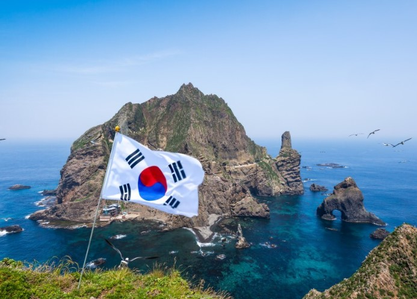

독도는 한국과 일본 간의 영토 분쟁 지역으로, 두 나라 모두 독도에 대한 소유권을 주장하고 있다. 한국의 역사 기록에는 독도가 신라 시대부터 한국의 영토로 명시되어 있다. 예를 들어, 삼국사기에는 512년 신라 지증왕이 우산국을 복속시켰다고 기록되어 있으며, 조선 시대의 여러 문헌에서도 독도가 한국의 영토로 언급되고 있다. 반면, 일본은 17세기 중반부터 독도를 다케시마(竹島)라 부르며 자국 영토로 주장해 왔으나, 1696년 에도 막부는 울릉도와 독도로의 도항을 금지한 바 있다.
국제법적 관점에서도 독도는 한국의 영토로 인정받을 수 있다. 1946년 연합군 최고사령부 지령(SCAPIN) 677호는 일본의 행정 권한에서 독도를 제외시켰으며, 이는 독도가 일본의 영토가 아님을 국제적으로 인정한 사례로 볼 수 있다. 그러나 1951년 샌프란시스코 강화조약에서 독도에 대한 명확한 언급이 없어 양국 간 해석 차이가 발생했다.
현재 독도는 대한민국이 실효적으로 지배하고 있으며, 경상북도 울릉군에 속해 있다. 한국 정부는 독도에 대한 주권을 적극적으로 행사하며, 독도 관련 연구와 문화 활동을 통해 영유권을 강화하고 있다. 독도는 풍부한 해양 자원과 전략적 위치로 인해 경제적, 군사적 가치가 크기 때문에, 한국과 일본 모두 독도에 대한 주장을 굽히지 않고 있다.
